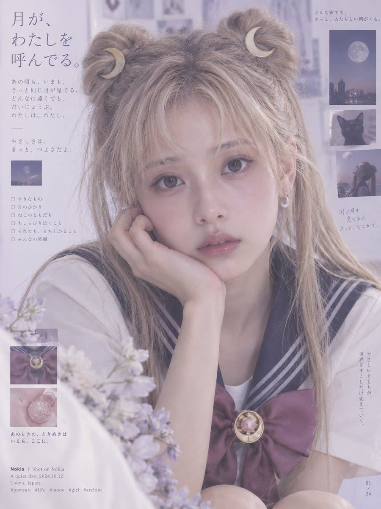

Japanese Magazine Style Portrait with Foggy Purple Grey Tone
GRN-002Grain / FilterGPT Image 2by VoxCatOctober 14

A prompt for generating a realistic portrait in a Japanese magazine layout style with low-saturation foggy purple and grey tones, featuring soft lighting and archival aesthetic.
Prompt
{argument name="character" default="[Character Description]"}, real person character, shot on Nokia.
Soft character setting portrait × Japanese flat magazine layout × Smooth digital gradients with fine hair rendering × Continuous subtle light and shadow gradient shaping on the face.
Frontal full soft light, almost no obvious shadow breaks.
The overall color palette uses foggy purple / ivory white / light gray, extremely low saturation cool tones.
The subject is centered in a frontal head-and-shoulders close-up composition, with clear facial structure, leaving space around the edges for small typography and archival label areas.Tags: close-up, 35mm film, portrait, JSON prompt